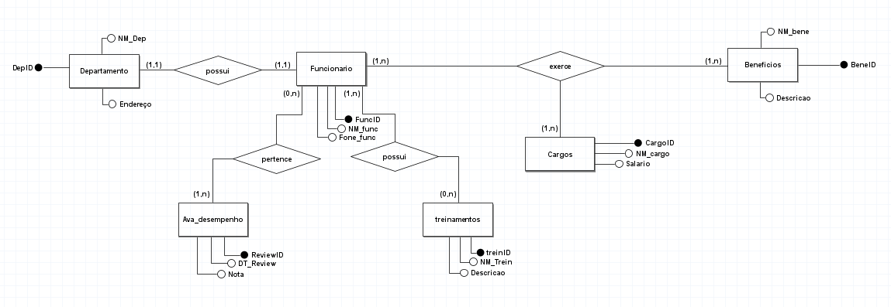

<!DOCTYPE html>
<html lang="en">
<head>
  <meta charset="UTF-8">
  <meta http-equiv="X-UA-Compatible" content="IE=edge">
  <meta name="viewport" content="width=device-width, initial-scale=1.0">
  <title>Microsoft</title>
</head>

  <!--
    - favicon
  -->
  <link rel="shortcut icon" href="Imagens/logo2.png" type="image/x-icon">

  <!--
    - custom css link
  -->
  <link rel="stylesheet" href="index.css">

 
  <link rel="preconnect" href="https://fonts.googleapis.com">
  <link rel="preconnect" href="https://fonts.gstatic.com" crossorigin>
  <link href="https://fonts.googleapis.com/css2?family=Poppins:wght@300;400;500;600&display=swap" rel="stylesheet">
</head>

<body>

  <!--
    - #MAIN
  -->

  <main>

    <aside class="sidebar" data-sidebar>

      <div class="sidebar-info">

        <figure class="avatar-box">
          
        </figure>

        <div class="info-content">
          <!----
          <h1 class="name" title="Grupo quatro">Microsoft Corp.</h1>
          -->
          <a href="indexx.html"><h1 class="name" title="Grupo quatro">Microsoft Corp.</h1></a>
          <p class="title">grupo quatro</p>
        </div>

        <button class="info_more-btn" data-sidebar-btn>
          <span>grupo quatro</span>

          <ion-icon name="chevron-down"></ion-icon>
        </button>

      </div>


    
    <article class="empresa  active" data-page="empresa">

        <header>
          <br>
          <h2 class="h2 article-title">Introdução</h2>
        </header>

        <section class="empresa-text">
            O modelo de banco de dados proposto para o departamento de Recursos Humanos (RH) da Microsoft é um sistema simplificado, mas abrangente, que visa facilitar a gestão de funcionários, cargos, departamentos, benefícios, treinamentos e avaliações de desempenho. Este banco de dados é projetado para fornecer uma visão clara e estruturada das principais informações relacionadas aos funcionários e suas respectivas associações dentro da empresa.
            <br>
            <br>
          <h2 class="h2 article-title">Estrutura do Banco de Dados</h2>
          1. Funcionários
          <br>
          <br>
          A entidade "Funcionários" armazena informações básicas sobre cada funcionário. Os principais atributos são:<br>
          - FuncID Um identificador único para cada funcionário.<br>
          -NM_func: O nome completo do funcionário.<br>
          -Fone_func: telefone de contato do funcionário.<br>
          <br>
          <br>
           2. Cargos 
           <br>
          <br>
          A entidade "Cargos" descreve os diferentes cargos dentro da empresa. Seus atributos são:<br>
          - CargoID: Um identificador único para cada cargo.<br>
          - NM_cargo: O título ou nome do cargo.<br>
          - Salário: O salário associado ao cargo.<br>
          <br>
          <br>
           3. departamentos
           <br>
          <br>
          A entidade "Departamentos" contém informações sobre os diversos departamentos da empresa. Os atributos são:<br>
          - DepID: Um identificador único para cada departamento.<br>
          - NM_dep: O nome do departamento.<br>
          - Endereço: A localização física do departamento.<br>
          <br>
          <br>
          4. Benefícios
          <br>
          <br>
          A entidade "Benefícios" detalha os benefícios oferecidos aos funcionários. Seus atributos incluem:<br>
          - BeneID: Um identificador único para cada benefício.<br>
          - NM_bene: O nome do benefício.<br>
          - descrição: Uma descrição do benefício.
          <br>
          <br>
          5. Treinamentos 
          <br>
          <br>
          A entidade "Treinamentos" registra os programas de treinamento disponíveis para os funcionários. Os atributos são:<br>
          - `TrainD`: Um identificador único para cada treinamento.<br>
          - NM_trein: O nome do treinamento.<br>
          - descrição: Uma descrição do treinamento.<br>
          <br>
          <br>
          6. Ava_Desempenho (Avaliação de desempenho)
          <br>
          <br>
          A entidade "Avaliações de Desempenho" armazena as avaliações de desempenho dos funcionários. Os atributos são:<br>
          - ReviewID: Um identificador único para cada avaliação.<br>
          - DT_Review: data da avaliação.<br>
          -Nota: A nota ou pontuação da avaliação.     
          <br>
          <br>    
          <h2 class="h2 article-title">Relacionamentos e Integração</h2>
          1. Funcionários e Departamentos: Cada funcionário está associado a um departamento. Um departamento pode ter muitos funcionários, mas cada funcionário pertence a apenas um departamento.<br>
          <br>
          <br>
          2. Funcionários e Cargos: Cada funcionário tem um cargo específico dentro da empresa. Os cargos definem o título e o salário dos funcionários.<br>
          <br>
          <br>
          3. Funcionários e Benefícios: Funcionários podem ter múltiplos benefícios. Este relacionamento é gerido através de uma tabela associativa (não detalhada aqui para simplicidade), onde cada benefício pode ser associado a múltiplos funcionários.<br>
          <br>
          <br>
          4. Funcionários e Treinamentos: Funcionários podem participar de múltiplos treinamentos. Semelhante aos benefícios, este relacionamento é gerido por uma tabela associativa, permitindo que um treinamento seja associado a muitos funcionários e vice-versa.<br>
          <br>
          <br>
          5. Funcionários e Avaliações de Desempenho: Cada funcionário pode ter múltiplas avaliações de desempenho ao longo do tempo. As avaliações ajudam a rastrear e gerenciar o desempenho e o desenvolvimento dos funcionários.
          <br>
          <br>
          <h2 class="h2 article-title">Objetivos e Benefícios</h2>
          Este modelo de banco de dados simplificado oferece várias vantagens:<br>
          <br>
          <br>
          - Clareza e Simplicidade: Reduz a complexidade ao focar em informações essenciais, facilitando a manutenção e a consulta dos dados.<br>
          - Escalabilidade: A estrutura pode ser facilmente expandida para incluir mais detalhes, conforme necessário.<br>
          - Integridade dos Dados: O uso de identificadores únicos e chaves estrangeiras garante a integridade referencial entre as tabelas, mantendo os dados consistentes.<br>
          - Facilidade de Uso: A simplicidade do modelo facilita o uso e a compreensão, tanto para administradores de banco de dados quanto para usuários finais.<br>
          <br>
          <br>
          Este modelo serve como uma base sólida para a gestão eficiente de informações de RH, apoiando decisões estratégicas e operacionais na Microsoft
          <br>
          <br>
          <h2 class="h2 article-title">DER</h2>

          
            <br>
            <br>
            <h2 class="h2 article-title">Relacional</h2>

            

        </section>
</head>
<body>
    
</body>
</html>